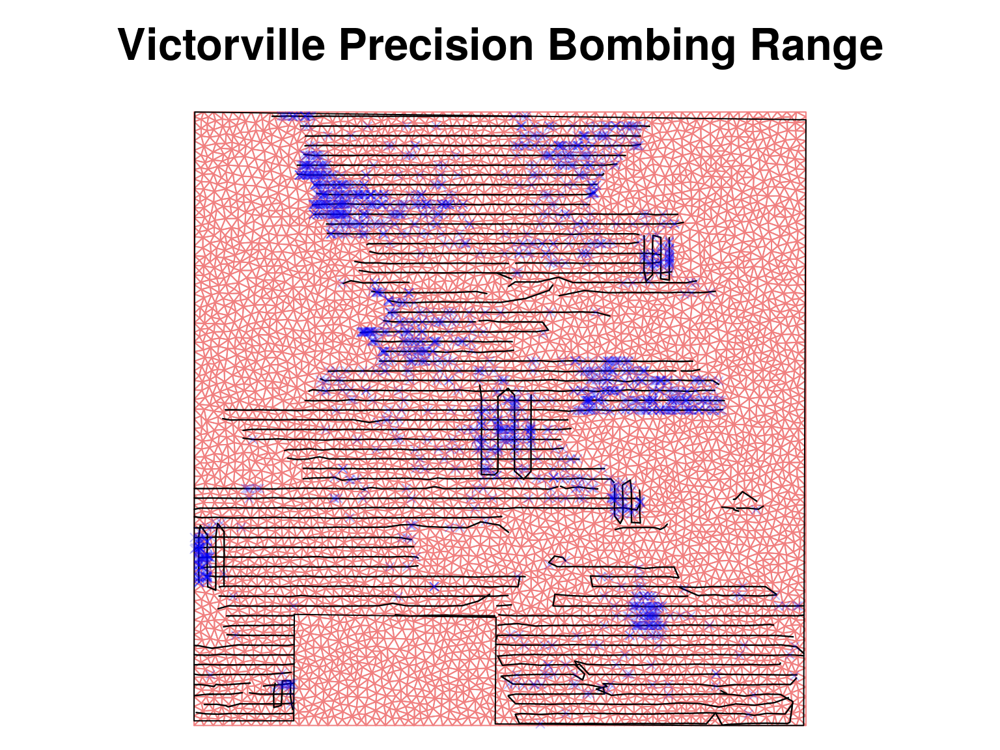
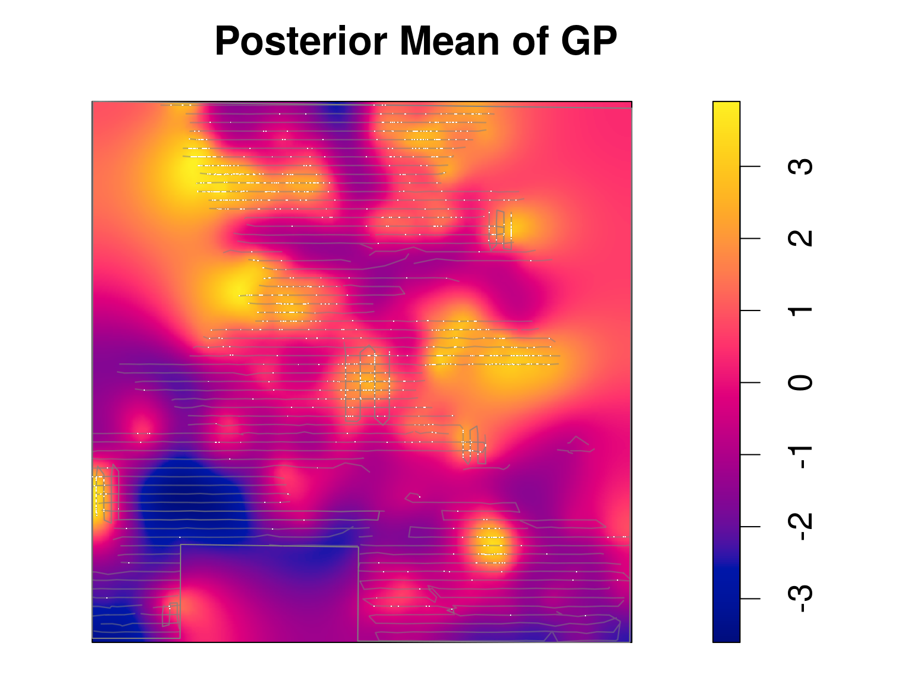

Bits and Pieces for Approximate Spatial Mapping
K. A. Flagg
26 September 2019
\[
(\kappa^{2} - \Delta)^{\alpha / 2} (\tau Z(\mathbf{s})) = W(\mathbf{s})
\]
\[
(\kappa^{2} - \Delta)^{\alpha / 2} (\tau Z(\mathbf{s})) = W(\mathbf{s})
\]


- Point process intensity
- \(\lambda(\mathbf{s})\) events per acre
- Model
- \(\log\lambda(\mathbf{s}) = \mu + Z(\mathbf{s})\)
- \(Z(\mathbf{s})\) spatial Gaussian process
- Log-Gaussian Cox process (LGCP)
- Random continuous function
- \(Z(\mathbf{s})\) a Gaussian random variable
- Mean 0
- Matèrn covariance function
- INLA: Integrated Nested Laplace Approximation (Rue, Martino, and Chopin 2009)
- Bayesian Hierarchical models
- Many latent Gaussian variables
- Few parameters
- E.g. spatial prediction using Gaussian process model
- Laplace approximation in general
- \(\int \exp[h(x)]\mathrm{d}x\)
- Taylor expansion of \(h(x)\)
- Laplace approximation for likelihood
- \(L(\boldsymbol{\theta}) = \exp[\ell(\boldsymbol{\theta})]\)
- Taylor expansion of \(\ell(\boldsymbol{\theta})\)
- Example from Blangiardo and Cameletti (2015) section 4.9
- \(\mathbf{y} = (y_{1}, \dots, y_{n})'\) independent Gaussian observations
- \(y_{i} \sim \mathsf{N}(\theta, \sigma^{2})\)
- \(\theta \sim \mathsf{N}(\mu_{0}, \sigma_{0}^{2})\)
- \(\psi = 1/\sigma^{2}\), \(\psi \sim \mathrm{Gamma}(a, b)\)
- The posterior distribution of \(\psi\) \[p(\psi|\mathbf{y}) \propto \frac{p(\mathbf{y} | \theta, \psi) p(\theta) p(\psi)} {p(\theta | \psi, \mathbf{y})}\]
- Laplace approximation \[\tilde{p}(\psi|\mathbf{y}) \propto \frac{p(\mathbf{y} | \theta, \psi) p(\theta) p(\psi)} {\tilde{p}_{G}(\theta^{*} | \psi, \mathbf{y})}\]
- Repeat for \(\theta\)
- Will depend on \(\psi\)
- Priors: \(\mu_{0} = -3\), \(\sigma_{0}^{2} = 4\), \(a = 1.6\), \(b = 0.4\)
- 30 observed points
INLApackage for R- Provides marginal posterior
- Not joint posterior
\[ (\kappa^{2} - \Delta)^{\alpha / 2} (\tau Z(\mathbf{s})) = W(\mathbf{s}) \]
- SPDE approach (Lindgren, Rue, and Lindström 2011)
- \((\kappa^{2} - \Delta)^{\alpha / 2} (\tau Z(\mathbf{s})) = W(\mathbf{s})\)
- Choose nodes \(\mathbf{s}_{i}\) to model \(Z(\mathbf{s}_{i})\)
- Build a triangular mesh
- Autoregressive model on the nodes
\(\phantom{x + y + z = 1}\qquad x + y + z = 1\)
 →
→
\[ f(\mathbf{s}) \approx \alpha f(1, 0, 0) + \beta f(0, 1, 0) + \gamma f(0, 0, 1) \]


References
Blangiardo, Marta, and Michela Cameletti. 2015. Spatial and Spatio-Temporal Bayesian Models with R-INLA. Wiley.
Lindgren, Finn, Håvard Rue, and Johan Lindström. 2011. “An Explicit Link Between Gaussian Fields and Gaussian Markov Random Fields: The Stochastic Partial Differential Equation Approach.” Journal of the Royal Statistical Society: Series B (Statistical Methodology) 73 (4): 423–98.
Rue, Håvard, Sara Martino, and Nicolas Chopin. 2009. “Approximate Bayesian Inference for Latent Gaussian Models by Using Integrated Nested Laplace Approximations.” Journal of the Royal Statistical Society: Series B (Statistical Methodology) 71 (2): 319–92.